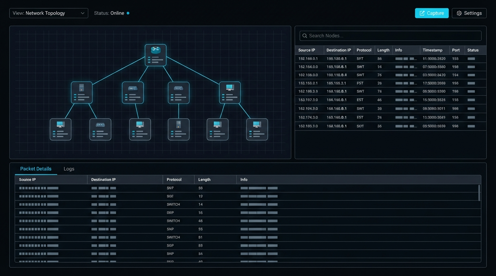
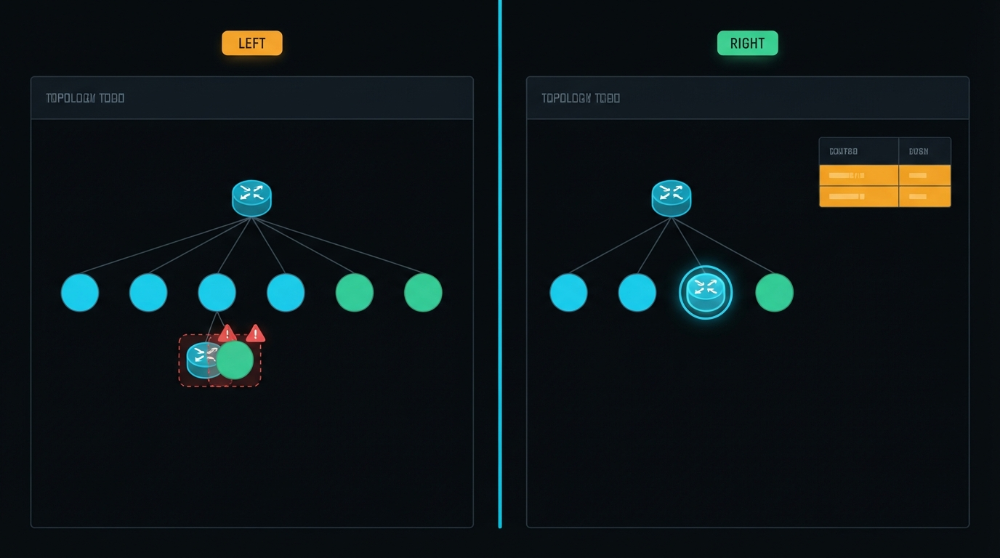

BPLC STA Monitor 是面向 HPLC（BPLC / HRF）协议的 STA 报文监控上位机。
它从调试串口实时捕获固件输出的 0x3C … 0x3E 封装帧，
逐层拆解 FCH / MPDU / PB / MSDU / MMe / APP，并把协议字段树与十六进制原始字节双向联动高亮——
点一个字段，就知道它来自哪几个字节。
电力线载波通信（PLC）的调试长期依赖「抓一堆十六进制、对着 PDF 规范逐字节数」。 一个 152 字节的 SOF 帧，要跨 FCH、多个物理块、MSDU 三层才能定位一个字段—— 而字段位置在不同帧类型下含义还会变。BPLC STA Monitor 把这套手工流程自动化了。
串口收到的原始帧被逐层拆成 Physical → MPDU Base → PB → MSDU → MMe/APP 的树形结构，
每个节点标注位宽 [Nb]、枚举中文含义、单位（s / ms / dB / %）。
点字段树任意一行，下方十六进制视图立刻高亮它覆盖的原始字节；多 PB 报文里每块的 Header / Body / CRC24 都能单独点选。反过来看字节，也知道它属于哪个字段。
Linked Highlight独立的 TOPO 窗口按 NID 动态绘制 CCO / STA 树形拓扑，四态图标区分在线、入网中、离线， 右侧同步记录路由变更与 TEI→MAC 映射，还能回放到任意历史帧。
Topology国网 GW_2022（HDC 1.0）与南网 NW_2021 两套协议栈并存，
并已扩展到 GW_2026 / NW_2026（SPLC）。字段树、枚举、数值解释随协议整体切换，
选择持久化在 config.ini。
捕获结果可导出为 .bin（保留原始帧 + BCD 时间标签）或裸 hex 文本，
随时重新导入回放；也能导出 CSV 给 Excel 直接打开。现场抓一次，实验室反复分析。
从帧解析到拓扑还原，覆盖现场调试的完整链路。
SOF（数据）、BEACON（信标）、ACK、COORD（协调）四类帧逐字段拆分， 含 FCH 位域、PB 块结构、MSDU 载荷。SEARCH / SWITCH 帧也会出现在列表中。
Frame TypesFCH CRC24、PB CRC24、MSDU CRC32、BEACON 载荷 CRC 全部校验，
三态显示 N/A / OK / FAIL，坏帧一眼可见。
分片 MSDU 跨多个物理块（PB）时自动重组，树中逐块展示
PB Header / PB Body(+Padding) / PB CRC24，字段仍可高亮到原始字节。
标准头与简头 MSDU_BASE、MMe 头（MMType 2B + RSV 2B）、8 类 MMe 消息， 以及 APP EventPacket 事件上报：DiscoveryNodeList、UpRouteEntryList、SuccessRateReport、Beacon Load 等。
Application Layer13 列信息（# / Time / Delta / Source / Destination / Protocol / Frame Type / MSDU Type / Seq / Length / Info…），
支持 & 与 | 组合的过滤表达式，按帧型、NetID、站点、媒介、序号筛选。
管理消息（MMe）暖色、应用数据（APP）冷色、COORD 紫色； 红色只保留给异常报文（ACK 校验失败 / APP NACK），不滥用告警色。
Visual Coding按 NID 绘制 CCO/STA 树形拓扑，节点三行标签（标题 / MAC / 接入方式 载波·RF）， 拖拽平移、滚轮缩放，悬停显示上下行通讯成功率，约 200ms 节流刷新。
Topology点任意历史帧，拓扑冻结并重放到该帧时刻的快照（图 / 路由变更表 / TEI→MAC 表）， 顶部显示「历史回放 @ #帧号」，一键回到实时跟随。
Time TravelVS Code 风格的扩展市场：Lua 脚本插件可订阅帧事件、调用 host.jumpToFrame() 控制主窗口，
支持安装 / 更新 / 卸载与版本约束。
随包提供 4 个 Lua dissector（gw_2022 / gw_2026 / nw_2021 / nw_2026）与
bin2pcap.py、serial2pcap.py、extcap 串口采集，可把捕获直接丢进 Wireshark。
界面语言中文 / English，默认跟随系统；深色（QDarkStyleSheet）/ 浅色主题即切即生效， 所有用户可见字符串中英配对。
i18n & Theme崩溃时自动生成 minidump 到 crashpad_db/，可配 Sentry DSN 自动上报；
内置更新检查，中国出口 IP 自动走镜像代理加速。
模块依赖自底向上单向流动：updater → common → io / protocol / ui → app。 协议解析与界面完全解耦，同一套解析器同时供桌面端与 Wireshark 插件使用。
IProtocolParser 接口，
由 ProtocolFactory 按协议类型分发。新增一代协议只需实现接口并注册，
界面层零改动——这也是 GW_2026 / NW_2026 能平滑接入的原因。
0x3C / 0x3E / 0x3D 用
0x3D + (0xFF ^ 原字节) 转义。反转义已放宽：
0x3D 后接非 C1/C2/C3 字节时按普通数据保留（只记 warn 不丢弃），
但 0x3E 定界仍严格——避免现场模块帧尾未转义的 ASCII 日志导致整帧丢失。
帧内 NTB 为 u32、40 ns/tick（25 MHz），约 171 秒回绕。时间轴按 NTB 差值推进； 帧间差值超出合理范围（≥60 s 或跨回绕）时自动开启新分段，用 BCD 时间标签重新锚定。
TimingSOF 帧按 FCH 标准版本号（byte12 高 4bit）区分：1 走 BPLC 旧协议、
2 走 SPLC 新协议。信标 / ACK / COORD 默认按新协议解析，失败自动回退旧协议。
拓扑只由「成功解析」的关联请求 / 确认 / 指示、发现节点列表、代理变更确认、 离线指示等事件更新；CCO 与 STA 的重启次数变化会单独记警告，不清空已有拓扑。
Event Sourcing三种数据来源，同一套解析流程。安装包为 per-user 安装，不触发 UAC。
从 Releases 页面获取 BPLC_STA_Monitor_Setup_v2.0.1.exe（Windows）
或 BPLC_STA_Monitor_v2.0.1_linux_x86_64.tar.gz（Linux）。
默认安装到 %LOCALAPPDATA%\Programs\BPLC_STA_Monitor，
自动创建桌面快捷方式与开始菜单项。升级安装会先关闭运行中的程序并覆盖旧文件，
同时保留已有的 config.ini。
程序在 exe 同目录自动生成带注释的 config.ini 模板。
删除该文件后下次启动会重建默认配置。
确认调试串口已连接，且未被其他程序占用。
点击工具栏「开始」或按 Ctrl+E，
在「通讯口设置」中选择「实时串口」。
默认 460800，
实际串口格式为 8-N-1。可选 115200 / 256000 / 460800 / 1500000。
新帧按时间顺序进入帧列表，默认自动跟随最新帧； 向上滚动会暂停跟随，滚回底部恢复。
点帧列表某行 → 上方协议字段树展开 → 点字段行 →
下方十六进制区高亮对应字节。右键可复制 Hex(N 字节) 或 0x 前缀。
「开始」→ 数据源类型选「文件回放 (.bin)」或「裸 hex 文本」。
.bin 保留原始帧与 BCD 时间标签；
.txt / .hex 每行一条完整 0x3C … 0x3E 帧，
首行可为 TIME: yyyy-MM-dd HH:mm:ss.zzz。
程序读取帧外 8 字节 BCD 标签作为时间基准， 段内按帧内 NTB 推进，恢复原始捕获时刻；无标签时自动回退本地时间，无需手动配置。
也可以直接把 .bin 或裸 hex 文件拖到窗口里。
Qt 6.11.3（mingw_64）+ MinGW 13.1.0，构建方式为
qmake + mingw32-make（非 shadow 构建）。
全量构建 → windeployqt 收集 Qt 运行库 → NSIS 生成安装包。
用 clangd / LSP 时对 Qt 头文件会有假阳性报错，
以本机 mingw32-make 编译结果为准。
配置文件位于程序目录 config.ini，首次启动自动生成。
大部分项也可在「开始」对话框中修改并自动写回。
| 配置项 | 取值 | 说明 |
|---|---|---|
general/lang | auto / zh / en | 界面语言，默认跟随系统 |
general/protocol | gw_2022 / nw_2021 | 国网 / 南网协议栈，运行时切换并持久化 |
general/theme | auto / dark / light | 界面主题，即切即生效 |
general/filter | 过滤表达式 | 帧列表显示过滤器，下次启动自动恢复 |
general/update_url | URL | 更新清单 update.json 地址 |
general/mirror_mode | auto / native / proxy | 更新下载加速：按出口 IP 自动选路 / 始终直连 / 始终走代理 |
general/mirror_list | 逗号分隔前缀 | 代理前缀列表，按序探活取第一个可用；留空用内置三项 |
reader/mode | 0 / 1 / 2 | 0 串口、1 .bin 回放、2 裸 hex |
reader/com | COM 名称 | 串口名，如 COM3 |
reader/baud | 整数 | 波特率，默认 460800 |
reader/file_path | 路径 | 回放或导入文件路径 |
crash/backend | auto / sentry / crashpad | 崩溃转储后端，安装失败自动回退 |
crash/dsn | Sentry DSN | 填了崩溃自动上报，留空只本地落盘 |
crash/db_path | 目录 | 转储目录，留空为 exe 同级 crashpad_db |
& 为与、| 为或，& 优先级高于 |，
暂不支持括号嵌套。a & b | c 等价于 (a 且 b) 或 c。
Ctrl+E | 开始 |
Ctrl+. | 停止 |
Ctrl+P | 切换暂停菜单项 |
Ctrl+L | 清空 |
Ctrl+F | 应用显示过滤器 |
Enter | 在过滤框内应用 |
需要可靠暂停时，优先用工具栏「暂停 / 继续」按钮——菜单项与按钮状态当前未完全同步。
六个真实调试场景，说明在什么情况下用它、解决什么问题。
问题：现场 STA 上电后一直重试关联，日志只有一串十六进制。 无法判断是关联请求没发出去、CCO 没回确认，还是确认回来了但被 CRC 判坏丢弃。
用它：串口实时捕获后按 sof & sta-13 过滤，
在帧列表里看关联请求 / 确认的往返；点开 MSDU 树确认 MMe 类型与重启次数，
再看 FCH CRC24 与 MSDU CRC32 是否 FAIL——
一次就能区分「没发」「没回」「回了但坏了」三种完全不同的故障方向。
问题：抄表成功率下降，怀疑是某几级中继不稳定，但拓扑是动态变化的， 事后看日志根本还原不出「当时网络长什么样」。
用它：打开 TOPO 窗口按 NID 看树形拓扑，四态图标直接标出在线 / 入网中 / 离线； 悬停节点看上下行通讯成功率。右侧「路由变更记录」按时间正序列出代理变更、离线指示、 CCO/STA 重启警告，双击任意一行即可把拓扑冻结回放到那一帧，主界面同步定位—— 掉线前一刻的父节点是谁，一目了然。
问题：固件改了某个位域布局，上位机解析出来的值明显不对。 对着 PDF 规范逐字节数，一个 152 字节的 SOF 帧要数十几分钟，还容易数错位。
用它：点字段树里的目标字段，十六进制区立刻高亮它覆盖的原始字节，
位宽 [Nb] 直接标在字段名后；多 PB 报文里每块的
Header / Body / CRC24 都能单独点选。字段位置错了，高亮范围一眼就能看出偏移。
需要给同事看时导出 CSV 或裸 hex 文本，对方导入即可复现同一视图。
问题：同一批设备里既有 HDC 1.0 也有 HDC 2.0，南网侧还有 BPLC 与 SPLC 2026 混跑。 用错解析器，字段全是乱码，还容易得出「固件有 bug」的错误结论。
用它：在「开始」对话框切换协议栈，字段树、枚举、数值解释整体跟着换；
SOF 帧按 FCH 版本号自动分派到对应解析器，非 SOF 帧新协议解析失败会自动回退旧协议。
需要更细的抓包分析时，把导出的 .bin 用
bin2pcap.py 转成 pcap，配合随包的 4 个 Wireshark dissector 继续深挖。
问题：现场某台 STA 或 CCO 会不定时“消失”几秒又回来，抄表出现空档。日志里只有一串十六进制， 看不出是断电重启、看门狗复位，还是只是链路抖动；重启次数是 4-bit 计数器还会回绕，靠人眼比对根本对不上。
用它：TOPO 窗口的“路由变更记录”表会直接记下
警告STA重启过！STA N 重启次数 x→y 与 警告CCO重启过！重启次数 x→y
（CCO 重启按发现列表源 TEI=1 判定，STA 重启按关联请求判定），双击该行即可把拓扑冻结回放到那一帧，
看掉线前一刻的父节点是谁。重启次数是 4-bit 计数器（0–15 循环），工具用“连续前进数”判回绕，
把正常回绕与真正的双实体振荡区分开；同一 TEI 的载波与无线两条链路各自计数，不一致时另记一条“两链路计数不同”。
若报文带版本信息，字段树还会解析 系统启动原因
（0 正常启动 / 1 断电重启 / 2 看门狗复位 / 3 程序指针异常），直接给出重启性质。
再用 sta-13 过滤只看该站点的帧，配合历史回放逐帧看它掉线前后的关联请求 / 确认往返。
问题：同一台设备换了 TEI，或两台设备共用一个 TEI / MAC，导致抄表串号、路由错乱。 这种“数据自相矛盾”在原始报文里完全看不出来，事后翻日志也拼不出是哪两台设备撞了。
用它：TOPO 窗口底部“异常 / 冲突”页签专门汇总这类问题，共五类：
同一 MAC 多 TEI、同一 TEI 多 MAC、
重启次数振荡、两链路计数不同、
同一 NID 多 CCO MAC，每类按主体合并成一行并累加“冲突次数”，
双击可跳回首次 / 最近一次出现的帧。右侧“TEI→MAC 映射表”列出各节点 TEI 与 MAC 的对应关系，
冲突时一眼能看出哪个 TEI 被两台设备占用。设备重上电再次发起关联请求时，同一 MAC 的旧节点状态会先被移除，
避免“在线”与“入网中”双状态并存造成的误判。需要看原始证据时，用 MAC 串
（如 aa:bb:cc:dd:ee:ff）或 sta-N 过滤，
字段树里 MAC 字段与十六进制区联动高亮，直接定位冲突字节。
报文列表告诉你「这一帧是什么」，TOPO 窗口告诉你「这张网现在长什么样、刚才发生了什么」。 它把散落在成千上万帧里的组网事件、身份映射与自相矛盾之处，收敛成一张图、两张表、五个异常类别。
主界面工具栏点「拓扑」按钮，打开一个独立顶层窗口（标题「拓扑图 TOPO」，默认 1000×700，可自由移动、最小化、最大化）。 它不占用主界面空间，可以拖到第二块屏幕上，一边看报文一边看拓扑。窗口分四个区域：

| 区域 | 控件 | 排查时用来做什么 |
|---|---|---|
| 顶部 | 网络: NID ▾ | 切换网络。下拉项显示 NID、CCO 的 MAC、该网络首次识别的时间，用来区分同一 CCO MAC 下的新旧网络 |
| 顶部 | 模式标签 | 显示 实时 或 历史回放 @ #帧号 时间，一眼看出当前看的是不是冻结快照 |
| 顶部 | 在网节点：N | 只统计状态为在线的 STA（不含 CCO、不含入网中、不含离线），括号里另列入网中 / 离线数 |
| 顶部 | 回到实时 | 退出历史回放，恢复实时跟随（仅在回放模式下出现） |
| 顶部 | 适应视图 | 缩放并居中显示整张拓扑图，同时让各表列宽按内容重排一次 |
| 中部左 | 拓扑图 | 四态图标（CCO / 在线 / 入网中 / 离线）、三行标签（标题、MAC、入网链路）、悬停看详情 |
| 中部右 | TEI → MAC 映射表 | 八列身份台账 + 搜索框，双击邻居表单元格弹出邻居明细 |
| 底部 | 路由变更 页签 | 按时间正序列出组网事件，带筛选框，双击任意行跳帧 |
| 底部 | 异常/冲突 页签 | 五类「数据自相矛盾」的汇总，同类同主体合并成一行并累加次数 |
这一页签与「路由变更」刻意分开：路由变更是拓扑的正常演进，而这里记录的是 数据自己打自己——同一台设备出现两个身份、同一个身份被两台设备占用、计数器来回跳。 这类问题在原始报文里完全看不出来，事后翻日志也拼不出是哪两台设备撞了。
| 类别 | 判定条件（代码口径） | 说明什么 | 「次数」列含义 |
|---|---|---|---|
| 同一 MAC 多 TEI | 同一 (NID, MAC) 先后落在两个不同 TEI 上，且旧节点仍在线；CCO/STA 角色切换不受离线状态限制 | 一台设备换了 TEI 却还留着旧身份，或两台设备共用同一 MAC。TEI 列显示 旧→新 |
冲突次数：同一主体反复冲突的累计次数 |
| 同一 TEI 多 MAC | 同一 TEI 先后被两个仍在线的 MAC 使用 | TEI 被两台设备占用，抄表会串号。MAC 列显示 旧→新 |
冲突次数 |
| 重启次数振荡 | 同一 TEI + 介质的 4-bit 重启次数回到出现过的旧值（连续前进 ≥2 步后的回绕视为正常，不记） | 双实体共用 TEI，或计数器被复位。最近变化列显示 9↔12 (9→12) 这类往返 |
往返次数：回到出现过的取值才计，首次出现新值不计 |
| 两链路计数不同 | 同一 TEI 的载波与无线两条链路各自计数，两侧都有取值且不相等（两侧采样时间差超窗口则不比较） | 同一台设备在两条链路上报的重启次数对不上，提示其中一条链路的数据陈旧或身份串了 | 差异组合数：每个不同的 (载波, 无线) 取值组合各计一次 |
| 同一 NID 多 CCO MAC | 同一 NID 下出现第二个不同的 CCO MAC | 网络标识冲突：两个 CCO 用了同一个 NID，或 CCO 被换过。MAC 列显示 旧→新 |
冲突次数：每发现一个新的 CCO MAC 计一次 |
表头十列：首次帧、类别、TEI、MAC、
介质、次数、最近变化、首次时间、
最近时间、最近帧。
双击「首次帧」列跳到该异常第一次出现的帧，双击「最近帧」或其它任意列跳到最近一次出现的帧——
主界面帧列表同步选中并滚动居中，可以直接看那一帧的原始字节。
| 首次帧 | 类别 | TEI | MAC | 介质 | 次数 | 最近变化 | 首次时间 | 最近时间 | 最近帧 |
|---|---|---|---|---|---|---|---|---|---|
| 1024 | 同一 MAC 多 TEI | 5→13 | AA:BB:CC:DD:EE:01 | 载波 | 3 | 5→13 (5→13) | 10:02:11.480 | 10:07:33.902 | 1188 |
| 1102 | 同一 TEI 多 MAC | 21 | …EE:21→…EE:2F | 无线 | 2 | …EE:21→…EE:2F | 10:04:02.115 | 10:06:48.330 | 1150 |
| 1201 | 重启次数振荡 | 13 | AA:BB:CC:DD:EE:01 | 载波 | 20 | 9→12 (9→12) | 10:08:15.007 | 10:09:41.660 | 1247 |
| 1266 | 两链路计数不同 | 33 | AA:BB:CC:DD:EE:33 | 载波 / 无线 | 4 | 载波 7 / 无线 5 | 10:10:22.540 | 10:11:05.118 | 1290 |
| 1310 | 同一 NID 多 CCO MAC | 1 | …EE:00→…EE:0A | 载波 | 1 | …EE:00→…EE:0A | 10:12:30.004 | 10:12:30.004 | 1310 |
按时间正序记录组网事件，最新在底部（与主界面帧列表一致）。六列：
序号（对应主界面帧号）、时间点、类型、
NID、MAC、变更说明。
其中 MAC 列取的是「截至该事件之前」的映射值，不是最终映射回填——所以同一 TEI 换过 MAC 时，历史行显示的是当时那台设备。
上方筛选框是子串匹配、不区分大小写，同时匹配时间点、类型、NID、MAC、变更说明五列。
所以输入 STA-13 只看该站点相关事件，输入 重启 只看重启警告，
输入 aa:bb:cc 只看该 MAC 前缀，输入 0x1a2b 只看某个 NID。
滚动逻辑与主界面一致：滚到底部时跟随最新，向上翻阅时保持位置不动。
重启次数是 MAC 帧头里的 4-bit 计数器（0–15 循环），任何变化即视为重启。工具按主体分别判定，避免把 CCO 的重启记到某个 STA 头上：
判定依据：发现列表由 CCO 本人发出（源 TEI = 1）。基线按 (NID, MAC) 分开记，多 NID 同时抓包不会互相踩。
判定依据：关联请求由 STA 本人发出。基线按 (NID, 主体 MAC) 分开记，同 MAC 在不同 NID 下不串。
重启只是警告，不清空拓扑——网络还在，只是有人重启过。 4-bit 计数器会回绕（…→14→15→0），单步 +1 无法区分「正常回绕」与「差 1 的双实体振荡」， 所以工具用连续前进步数判回绕：连续前进 ≥2 步之后回到的旧值视为正常回绕、静默通过； 其余回到出现过的旧值才记一次往返。抓包丢帧时无法区分正常回绕与跳变，此时宁可报出来。
右侧面板是身份台账，八列：TEI、MAC、
入网链路（载波 / 无线 / 未定）、双模、
状态（在线 / 入网中 / 离线）、层级（从 CCO=0 沿父链向下，不可达为 -1）、
代理 TEI、邻居表。
多网络同时抓包时，按 NID 分别绘制各自的树。下拉项带 CCO MAC 与首次识别时间，用来区分同一 CCO MAC 下的新旧网络。下拉展开期间跳过的更新，收起时会补刷一次，不留过期列表。
单击主界面任意历史帧，拓扑图 / 路由变更表 / TEI→MAC 表一起冻结为该帧时刻的快照，顶部显示「历史回放 @ #帧号 时间」。双击任意帧（含最新帧）强制冻结。点「回到实时」恢复跟随。
鼠标停在节点上弹出：MAC、入网链路、双模、信号强度（dBm）、上级（代理）、无线上下行成功率、载波上下行成功率。两组都无上报时显示「通讯成功率: 暂无上报」。
拓扑数据随报文实时刷新，约 200ms 节流一次——高速灌帧时只置脏标志、定时批量刷新，不会因为拓扑重绘把界面拖卡。 设备重上电再次发起关联请求时，同一 MAC 的旧节点状态会先被移除，避免「在线」与「入网中」双状态并存造成的误判。
现场反馈：某台区抄表偶发串号，同一户的数据出现在别人名下。原始报文里一切正常，看不出任何异常。

顶部显示 在网节点：N（入网中 x / 离线 y）。若 N 比台账少，说明有设备没上线或身份被覆盖；若入网中持续不为 0，说明有设备卡在关联阶段。这一步只花两秒，先判断是「少设备」还是「多身份」。
串号类问题几乎必然在这里留下痕迹：同一 TEI 多 MAC 说明一个 TEI 被两台设备占用；同一 MAC 多 TEI 说明一台设备换了身份还留着旧的。看「次数」列判断是偶发一次还是反复发生——反复发生才是现场故障，偶发一次多半是重上电的正常过渡。
双击该行「首次帧」列，拓扑图、路由变更表、TEI→MAC 表一起冻结到那一帧，主界面帧列表同步选中并滚动居中。此时看到的是冲突刚发生时的网络形态，而不是现在的形态——这是事后翻日志永远拿不到的信息。
冲突行的 TEI 列显示 旧→新（或 MAC 列显示 旧→新），拿这个 TEI 去右侧映射表搜索框里过滤，就能看到该 TEI 当前挂在哪个 MAC、层级多少、代理 TEI 是谁。双击邻居表单元格还能看它和周围节点的 SNR 与双向成功率，判断是不是物理位置相近导致串了。
点「回到实时」恢复跟随，然后在主界面显示过滤器里输入该 MAC 串（如 aa:bb:cc:dd:ee:ff）或 sta-13，只看这两台设备的帧。点开字段树里的 MAC 字段，十六进制区会联动高亮它覆盖的原始字节，直接确认冲突发生在哪一帧、哪个字段。
把抓包导出为 .bin 或 CSV，用历史回放逐帧重走一遍；需要更细的协议层分析时，用 bin2pcap.py 转成 pcap，配合随包的 Wireshark dissector 继续深挖。异常表与路由变更表都支持整表复制，可直接贴进故障报告。
NID 下拉只看一个网络、右侧映射表搜索框按 TEI/MAC 过滤行、
底部路由变更表筛选框按关键字过滤事件、以及主界面显示过滤器（支持 | 或、& 与，无取反语法）只看某节点的帧。
异常 / 冲突页签本身没有独立筛选框，靠 NID 切换与上述手段缩小范围。
来自使用说明书 §11 的高频问题。
460800；
当前版本实际串口格式为 8-N-1（界面上的数据位 / 停止位 / 校验位选项暂未真正写入采集配置）。
.bin 必须使用 0x3C … 0x3E 帧格式；0x3C/0x3E 哨兵。Destination 或 Info 列中的拒绝原因即可定位。
*.dmp）到 exe 同级 crashpad_db\pending\。
在 [crash] dsn 填入 Sentry DSN 后崩溃会自动上报；不填只本地落盘。
命令行加 --self-crash-test 可触发一次确定性崩溃自测。
拿到 dump 后用 scripts/symbolize.sh <dump> --symdir <符号目录>
符号化定位到崩溃函数名与源码行。
mirror_list 顺序逐个代理探活，
第一个可用者同时用于清单获取与安装包下载；非中国出口直连 GitHub。
区域识别失败、代理全部不可用或中途失效时自动回退直连。
整个选路过程可在日志中以 [update-mirror] 前缀查看。
某个内置代理失效时，直接编辑 mirror_list 换成其他可用前缀即可，无需更新程序。
Windows 提供 NSIS 安装包（per-user，免 UAC）， Linux 提供 x86_64 压缩包；另附符号包用于崩溃栈符号化。